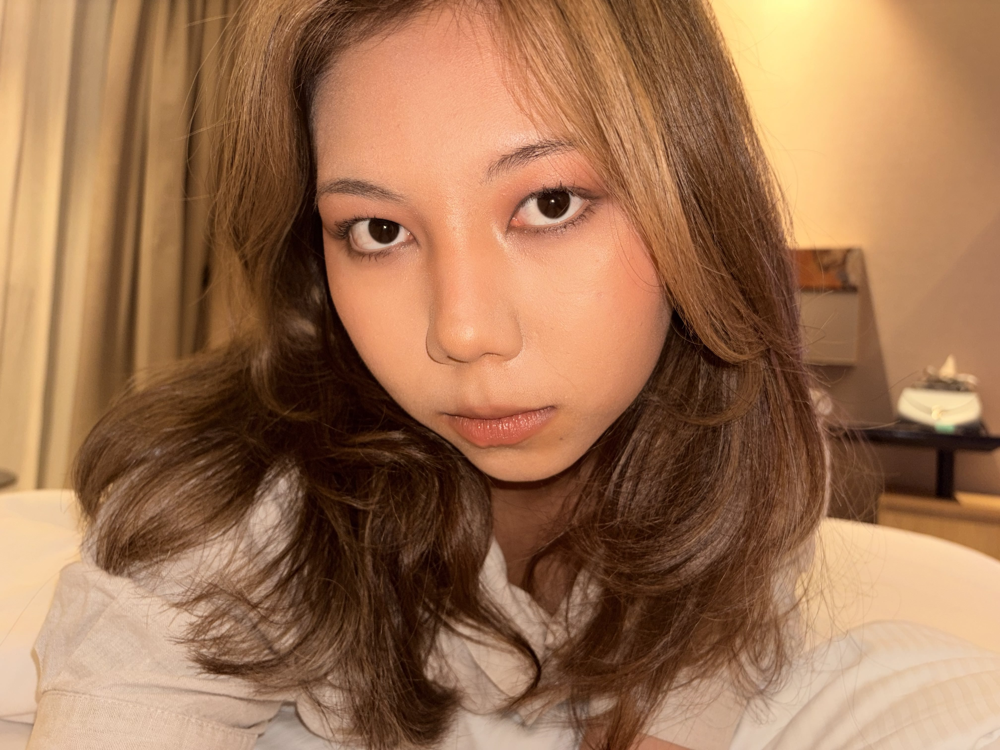
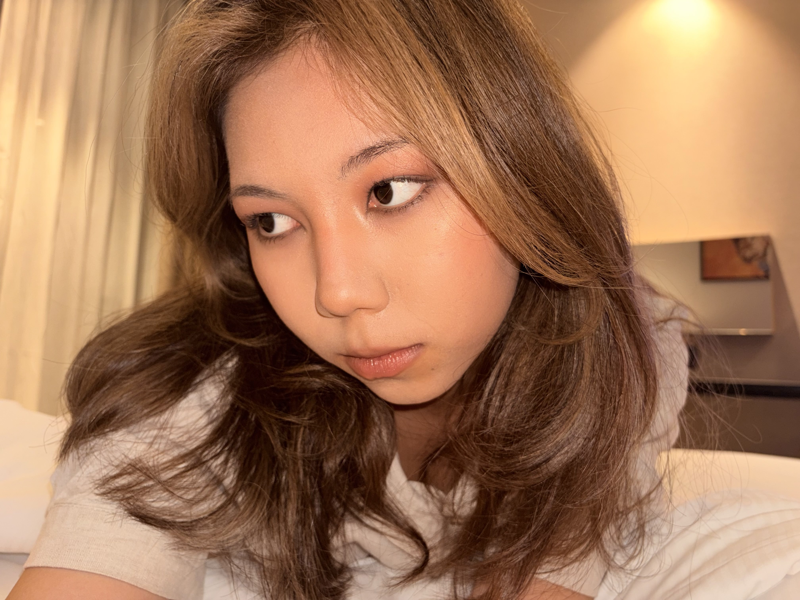

About.


performing-arts girl from Astana — 10+ years on international stages, theatres, lights & cameras. i learned to be bold and land it the first take.
how i switched to tech is the bigger reason though. i like fun stuff, but i want it to mean something, otherwise it makes no sense. so i push myself into deliberate challenges, the ones past my limit.
Minerva University — Business & CS (3% acceptance rate)
HS: Bilim Innovation Boarding School for Gifted Girls — 4% acceptance
hobbies
i like to treat my brain like a system i can rewire:
- killed a 10-year nail-picking habit.
- drop into deep focus doodling left-handed.
- play piano standing up.
- building a 5-octave range.
- learn each language through the last one (kazakh → russian → english → turkish → french). almost fluent in 5.